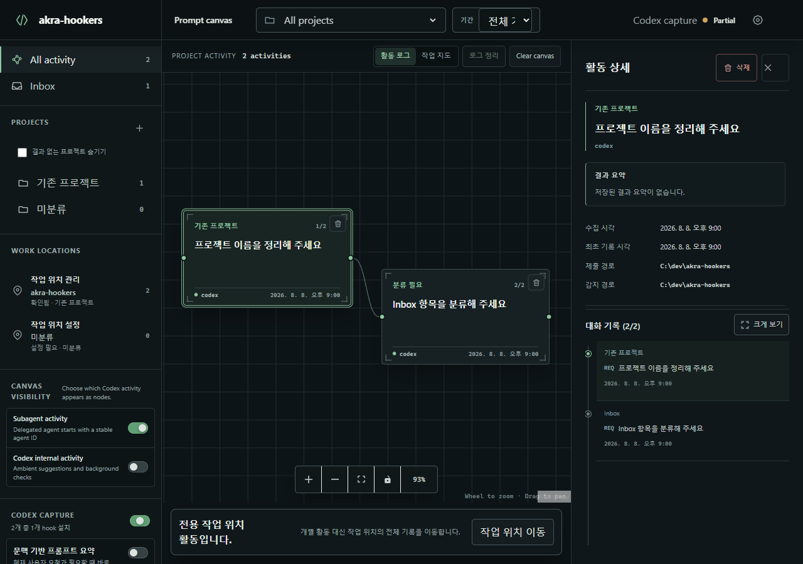
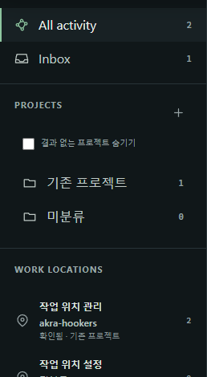
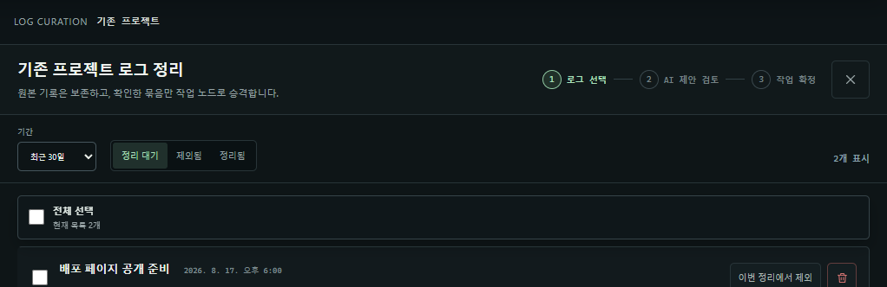
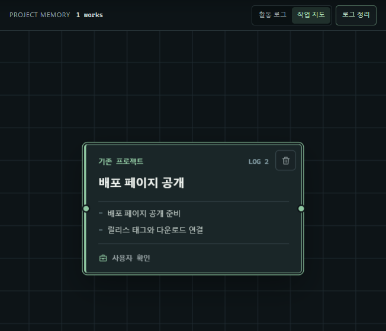
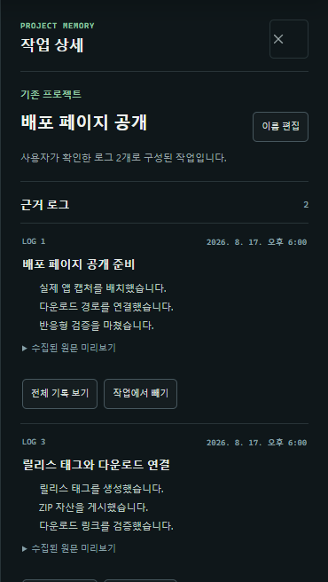

입력한 프롬프트
Codex가 붙인 wrapper를 구분하고 사용자가 실제로 요청한 내용을 보존합니다.
흩어진 프롬프트를
다시 맥락으로.
Codex App, CLI, WSL에서 건넨 요청과 최종 결과를 프로젝트별 공간에 연결합니다. 짧은 “진행해”도 이전 작업의 맥락과 함께 다시 찾을 수 있습니다.

원문은 증거로 보존하고, 결과와 다음 요청 사이에 다시 읽을 수 있는 연결을 만듭니다.
Codex가 붙인 wrapper를 구분하고 사용자가 실제로 요청한 내용을 보존합니다.
최종 assistant 결과만 Spark로 정확히 세 줄 요약해 같은 turn에 결속합니다.
“진행해” 같은 요청도 직전 결과 요약과 함께 이해할 수 있게 표시합니다.
먼저 기록의 범위를 고르고, 필요한 로그만 작업으로 승격한 뒤, 작업 사이 관계와 원본 근거를 오갑니다. 아래 화면은 모두 실제 Akra Hookers 렌더 결과를 영역별로 나눈 것입니다.

탐색 · 프로젝트 · 작업 위치
전체 기록과 아직 분류하지 않은 Inbox를 오가고, 프로젝트별 활동 수와 실제 수집 위치를 확인합니다. 기간 필터가 바뀌면 이 숫자도 같은 조건으로 함께 갱신됩니다.

로그 정리 · 사용자 확인
한 세션 전체를 자동으로 묶지 않습니다. 사용자가 검토할 로그를 고르면 AI는 제한된 요약만으로 기존 작업 편입과 신규 작업을 제안하고, 실제 반영은 사용자가 확정합니다.

작업 지도 · 사용자 연결
수집 로그 하나가 곧 노드 하나가 되는 구조가 아닙니다. 여러 프롬프트·응답 로그가 한 작업의 근거가 되고, 작업 사이 연결선은 최근 대화 순서가 아니라 사용자가 표현한 관계입니다.

작업 상세 · 근거 로그
작업 노드를 선택하면 어떤 요청과 결과가 이 작업을 만들었는지 확인할 수 있습니다. 요약만으로 부족할 때는 수집된 원문을 펼치고, 잘못 들어간 로그는 작업에서 분리할 수 있습니다.
설치 프로그램 없이 ZIP을 풀어 실행합니다. 실행 위치와 무관하게 활동 기록과 설정은 Windows 표준 사용자 경로 %LOCALAPPDATA%\akra-hookers에 유지됩니다.
최신 릴리스 확인 중…
GitHub Release 정보를 불러오고 있습니다.
Windows Portable ZIP 다운로드